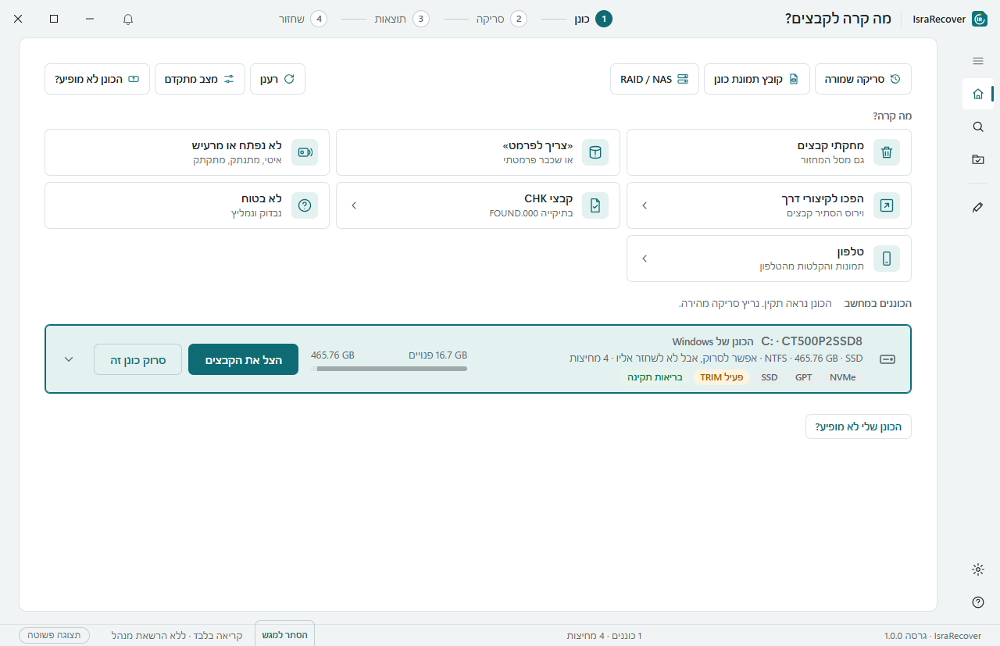
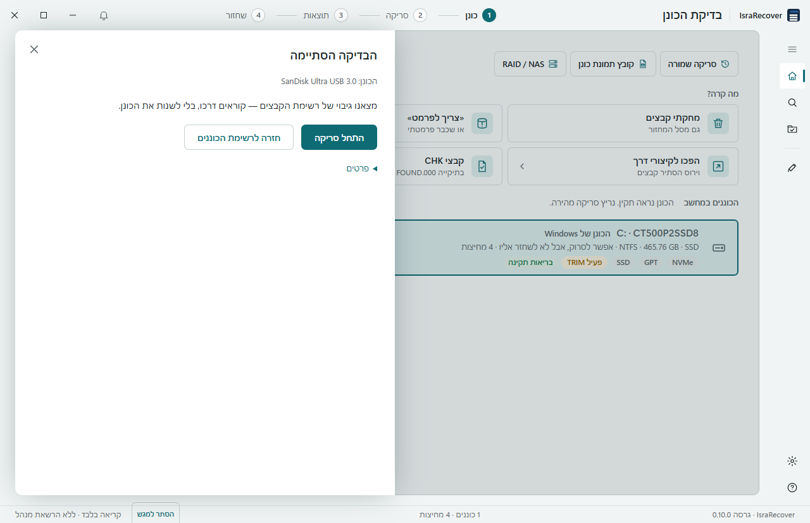
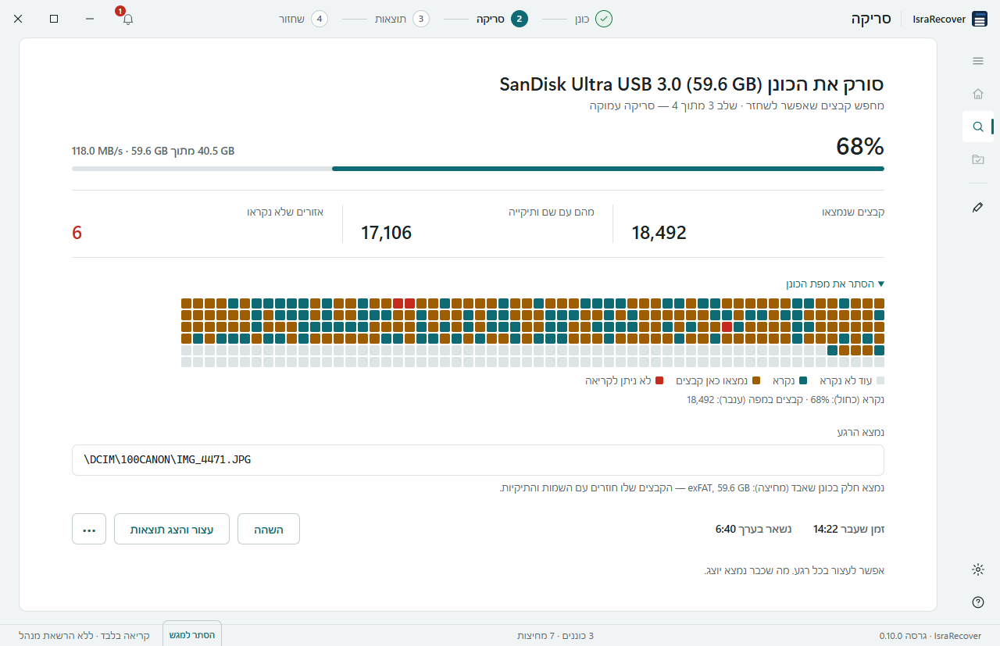
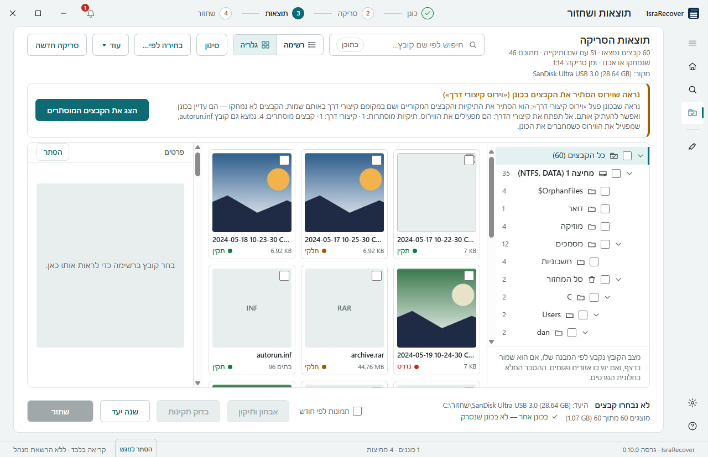
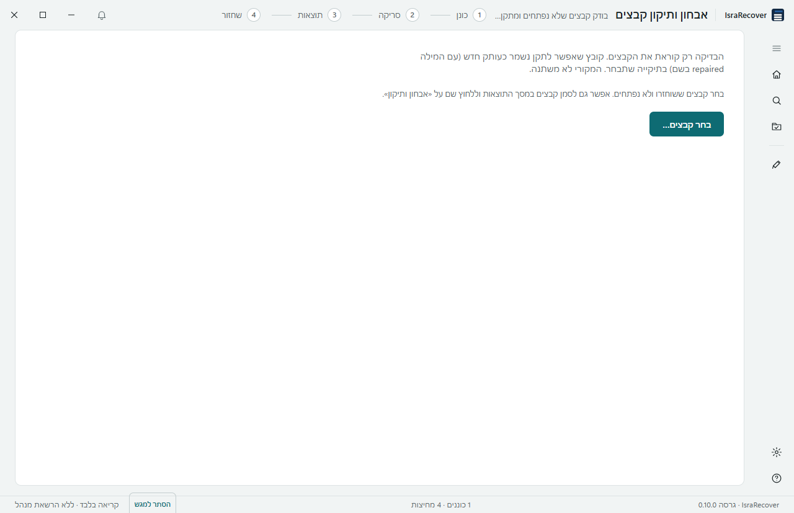

מחקתי קבצים
מחקת בטעות, או כבר רוקנת את סל המחזור.
התוכנה: מחפשת את הקבצים שנמחקו ומציגה אותם בעץ תיקיות. לא נמצא? «חפש לעומק» ממשיך לסריקה עמוקה.
חינם · בלי פרסומות · בעברית מלאה · Windows 10 ו-11
IsraRecover שואל מה קרה, בודק את הכונן, אומר לך מה בטוח לעשות עכשיו — ומוביל אותך צעד אחרי צעד עד שהקבצים שמורים בכונן אחר.
גרסה ניידת שרצה בלי התקנה, או קובץ התקנה רגיל. כל הקבצים
לפני הכול: אל תשמור ואל תתקין כלום על הכונן שממנו אתה רוצה לשחזר. אם Windows מציע לפרמט — לחץ «ביטול».

השאלה הראשונה בתוכנה
בחר את המצב הקרוב ביותר. לפי התשובה התוכנה בוחרת בשבילך את סוג הסריקה — ואומרת מה לעשות ומה לא.
מחקת בטעות, או כבר רוקנת את סל המחזור.
התוכנה: מחפשת את הקבצים שנמחקו ומציגה אותם בעץ תיקיות. לא נמצא? «חפש לעומק» ממשיך לסריקה עמוקה.
הכונן מופיע, אבל Windows אומר שצריך לפרמט אותו לפני שימוש.
התוכנה: קוראת את הכונן בלי לשנות אותו ושומרת את הקבצים לכונן אחר. כשיש גיבוי לחלק הפגום — «תיקון כונן» מחזיר אותו לעבודה בלי פרמוט.
עשית פרמוט מהיר, בטעות או כי Windows ביקש.
התוכנה: סריקה עמוקה שמזהה קבצים לפי התוכן, ומחזירה גם את השמות והתיקיות מלפני הפרמוט בכרטיסים ובדיסק-און-קי.
מחיצה נמחקה או אבדה, והאות שלה כבר לא מופיעה במחשב.
התוכנה: מחפשת מחיצות שאבדו וקוראת את הקבצים שבתוכן — גם מחיצת NTFS ששני מגזרי האתחול שלה אבדו.
הכונן נתקע, נעלם באמצע, או משמיע רעשים.
התוכנה: קודם מעתיקה את הכונן לקובץ (תמונת כונן), ואז סורקת את העותק. אם הבדיקה מראה תקלה בכונן עצמו — היא אומרת ולא מתחילה סריקה.
בדיסק-און-קי הקבצים נעלמו ובמקומם הופיעו קיצורי דרך. זה וירוס שהסתיר אותם.
התוכנה: הקבצים עדיין שם, רק מוסתרים. היא מחזירה אותם בלי סריקה, ומזכירה לנקות את המחשב שהדביק.
אחרי «סרוק ותקן» Windows העביר קבצים לתיקייה FOUND.000, בלי שמות ובלי סיומת.
התוכנה: מזהה לפי התוכן מה כל קובץ ונותנת לו סיומת נכונה.
תמונה, מסמך או סרטון שנפתח עם שגיאה, רק בחלקו, או «קובץ לא נתמך».
התוכנה: «רופא קבצים» בודק תמונות, סרטונים, מסמכי Office ו-PDF, ואומר אם אפשר לתקן, להציל חלק, או שאין מה לעשות.
לא בטוח מה קרה? בחר «אני לא בטוח מה קרה». התוכנה תבדוק את הכונן שתבחר ותמליץ מה לעשות.
ארבעה צעדים
דיסק-און-קי, כרטיס זיכרון, דיסק חיצוני או הדיסק של המחשב.
עד חצי דקה, בלי לכתוב עליו: בריאות, SSD, BitLocker, כונן של Mac או לינוקס. לפי זה היא בוחרת את הסריקה — או אומרת לעצור.
עץ תיקיות, רשימה או גלריית תמונות. ליד כל קובץ — מצבו: שלם, חלקי, או שקובץ אחר תפס את מקומו. תצוגה מקדימה לפני שמחליטים.
בוחר מה להחזיר ושומר לכונן אחר. מקבל סיכום שחזור, וקבצים חלקיים נשמרים בנפרד.
ככה זה נראה




קודם כל לא להזיק
IsraRecover בנוי סביב הכלל הזה.
מתחת למכסה
כל מה שהלקוח רואה פשוט — ומתחת לזה הכלים שטכנאי צריך.
כנות לפני הכול
תוכנה לא פותרת כל מקרה. עדיף לדעת את זה לפני שמתחילים.
כן. התוכנה חינמית ואין בה פרסומות. הקוד שלה אינו פתוח.
כן. לא צריך לדעת מה זה מחיצה או סריקה עמוקה. אתה אומר מה קרה, והתוכנה בוחרת מה לעשות ומסבירה כל צעד במילים פשוטות. יש גם שאלות נפוצות בתוך התוכנה (F1).
אל תשמור ואל תתקין כלום על הכונן שממנו אתה רוצה לשחזר. אם Windows מציע לפרמט — לחץ «ביטול». הורד את התוכנה לכונן אחר, או השתמש בגרסה הניידת מדיסק-און-קי.
הסריקה רק קוראת ולא משנה בכונן כלום, והשחזור נשמר תמיד לכונן אחר. הפעולה היחידה שכותבת על הכונן היא «תיקון כונן», והיא לא רצה בלי תצוגה מקדימה, אישור בהקלדה וקובץ ביטול.
אחרי מחיקה או פרמוט, בדרך כלל לא. ה-SSD מוחק בעצמו את המקום של קבצים שנמחקו. התוכנה בודקת את זה ואומרת מראש, ואפשר לנסות פעם אחת.
כן. התוכנה קוראת כונני Mac (HFS+ ו-APFS), כונני לינוקס (ext4, XFS) ושרתי אחסון ביתיים (btrfs, RAID של לינוקס) במחשב Windows.
פתח אותו ב«רופא קבצים». הוא יגיד אם אפשר לתקן אותו, להציל חלק ממנו, או שאין מה לעשות. סרטון שנקטע או תמונה שנדרסה בתחילתה נבנים מחדש בעזרת קובץ תקין מאותו מכשיר.
בדיקת הכונן לוקחת עד חצי דקה. זמן הסריקה תלוי בגודל הכונן ובסוג הסריקה; בזמן הסריקה רואים כמה נשאר בערך ומה נמצא עד עכשיו.
התוכנה בודקת פעם ביום אם יש גרסה חדשה ומציעה להתקין אותה בלחיצה — לא באמצע סריקה. אפשר גם להוריד ידנית מכאן.
הורדה
הגרסה האחרונה
Windows 10/11 (64 ביט). התוכנה מבקשת הרשאות מנהל כדי לקרוא את הכונן ישירות. לאימות ההורדה מצורף SHA256SUMS.txt.